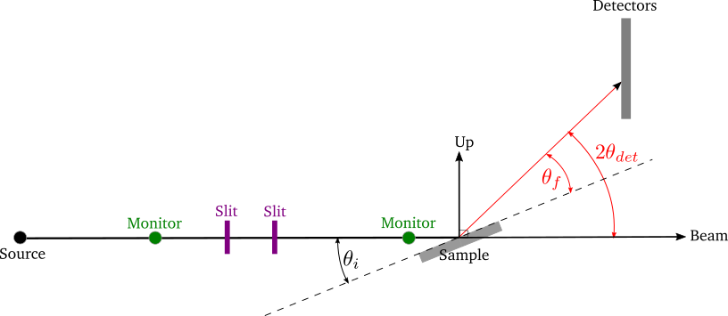
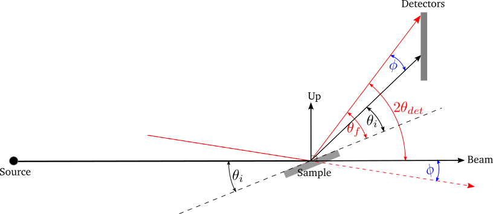
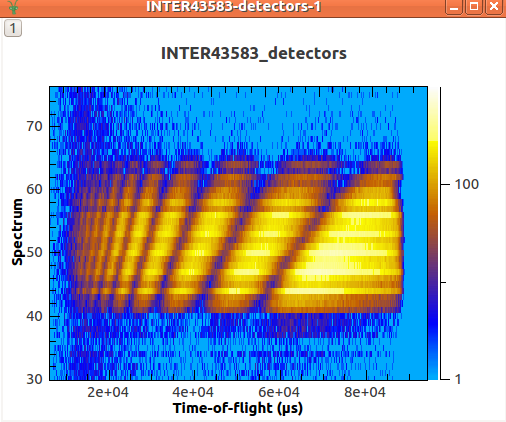
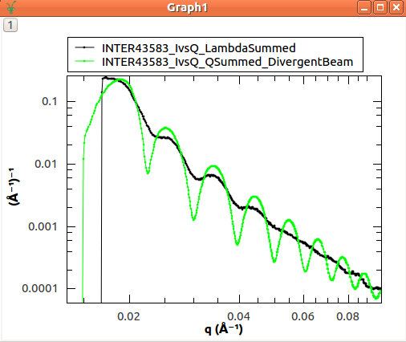
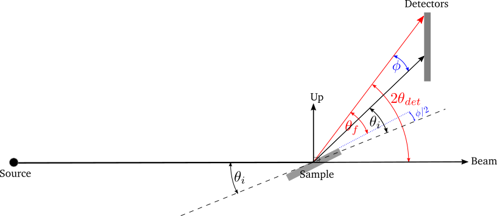

ISIS Reflectometry#
Overview#
This document explains set up of reflectometry instruments at ISIS and how Mantid is used to perform reduction of ISIS reflectometry data.
Introduction#
Reflectometry is a non-invasive technique that allows us to analyse the properties of planar media and surfaces such as biological and metallic thin films.
Interfaces and surfaces are scientifically crucial as they allow symmetry breaking, leading too many novel and interesting phenomena, such as ferroelectricity, wetting, adhesion and superconductivity. Interfaces are also critical in governing many important chemical and biological processes such as corrosion, catalysis and how cell membranes and antimicrobials work. Reflectivity is unique in its ability to probe buried interfaces while still providing the ensemble average of the properties of these buried interfaces. Most other probes are surface limited and local in nature.
Reflectivity occurs whenever there is an equivalent refractive index change across a material boundary/interface; this is analogous to how light (travelling through air) reflects off the surface of water (our interface of interest). As a result it is very sensitive to the structural/magnetic profile of interfaces. Reflectivity allows the structural, sometimes called “nuclear”, scattering length density (SLD) depth profile to be obtained via a modelling and iterative fitting process. The SLD profile is the important piece of information that the reflectivity technique provides.
To obtain the SLD profile, a model of the sample is used to create an initial SLD profile that via a fast Fourier transform is turned into a reflectivity curve. This curve is then compared to the actual reflectivity data curve. The iterative fitting procedure is used to modify the initial model and SLD profile until the generated reflectivity matches, to some goodness of fit metric, the actual data. Then end result being the final SLD profile.
Assuming the most common model and parametrisation type, based on layers, then the SLD can then be deconvolved into a series of layers each with three fundamental properties: (1) The structural layer thicknesses, (2) interface roughness/grading (3) density/composition. These three properties can be linked back to a wealth of technological and scientifically relevant phenomena. Further to this, by polarising the incident neutron beam the magnetic equivalents of the above can also be obtained. It is also important to note that there are other models and parameterisation schemes that can be used, to generate SLD profiles.
A reflectivity measurement is made by shining a collimated beam (low angular divergence) of neutrons onto a flat surface and the reflected intensity is measured as a function of angle and neutron wavelength. Reflectivity has two fundamental modes of operation. (1) Monochromatic (angle dispersive, fixed incident wavelength) and chromatic (wavelength dispersive, fixed angle). (2) Chromatic is usually referred to as Time of Flight (\(TOF\)) and \(TOF\) is the primary mode of operation on all the ISIS reflectometers and what is referred to throughout this document.
Further to this, there are two geometric modes of operation. By far the most common is specular reflectivity. In this case the angle of incidence is equal to the angle of reflection or \(\theta_i = \theta_f\). This is called the specular condition. It provides the SLD profile/information that is directly normal or perpendicular to the surface of the sample. Secondly there is off-specular reflectivity where the angle of incidence is not equal to the angle of reflection or \(\theta_i \ne \theta_f\) . This provides structural information in the plane of the sample.
As a quick aside it is worth mentioning that there is an added complication in describing scattering geometries in that different techniques, sources and institutions use different notations for the same things. For instance the specular condition can also be referred to as the \(\frac{\theta}{2\theta}\) (where \(2\theta\) is the scattering/detector angle and \(\theta\) the sample angle) or \(\frac{\omega}{\theta}\) (where \(\theta\) is not the scattering/detector angle and \(\omega\) the sample angle) conditions. At ISIS reflectometers for historic reasons the detector angle is referred to as \(\theta\) and the sample angle as \(\Phi\).
For more information, see the ISIS website.
Experimental Setup#
The main components in the instrument are shown below:

The basic reflectometry instrument setup as used on the Inter, Crisp and Surf beamlines. The black line is the incident beam and the red line the reflected beam. The dotted black line is the horizon of the sample which is at an angle \(\theta_i\) with respect to the incident beam. There are several caveats; the diagram depicts what happens with the 1D linear detectors’ on Inter, Crisp and Surf. In the case of the 0D point detectors on these beamlines the detector changes angle such that the beam is always perpendicular incident on the 0D detector surface. On Polref and Offspec, the detector plane rotates with the detector angle such that the beam is always perpendicular incident on the detector plane whether it is a 0D, 1D or 2D detector. This needs to be taken account of in the IDF depending on the beamline and detector in use.
Source: The source of neutrons
Sample: The planar material under analysis
Slits: These are used to collimate the beam. These have two primary effects:
They set the angular divergence/resolution \(\alpha\) of the beamline via the collimation equation \(\alpha = \frac{S_1+S_2}{L}\), where \(S_1,S_2\) are the widths of the slit gaps and \(L\) is the distance between Slit 1 and Slit 2. The resolution is often defined as \(\frac{\delta Q}{Q}\), where \(Q\) is the momentum transfer. Please see the NRCalculateSlitResolution v1 algorithm for more details.
They set the illuminated area on the sample. There are two regimes, under and over illumination and ideally you want to be under illuminating but that is not always possible as in the case of small samples.
Monitors: These are low efficiency detectors used to normalize the detector signal and mainly provide scaling.
Detectors: These are high efficiency detectors. Scattered neutrons are recorded by a detector or banks of detectors located at different scattering angles, \(2\theta_{det}\). Note that the terminology here differs from that in neutron diffraction, where \(\theta\) is referred to as the scattering angle rather than \(2\theta\). We define three types of general geometry of detector:
0D or point detectors, where a simple tube is used to integrate intensity, the detector itself has no position sensitivity, just the angle it is positioned at.
1D also referred to as linear, area or multidetector’s, where a stack of tubes/pixels is used to integrate intensity with either vertical or horizontal position sensitivity equal to the pixel size.
2D, which can also be referred to as an area detector. Similar to the 1D but with both vertical and horizontal position sensitivity. Note pixels may not be uniform in horizontal/vertical size.
\(\theta_i\): the incident angle, that is, the angle between the incident beam and the sample, commonly called the sample angle or at ISIS reflectometers the \(\Phi\) axis.
\(\theta_f\): the final angle, that is, the angle between the reflected beam and the sample. At ISIS reflectometers this is referred to as \(\theta\). In specular reflection, \(\theta_i = \theta_f\) and in off-specular analysis \(\theta_i \neq \theta_f\).
In addition, some instruments also use:
Supermirrors: Some samples, such as liquids, cannot be angled. Therefore non-polarising “supermirrors” can be used to change the incident angle of the beam to enable multiple angles to be measured from the surface.
Polarizers: Magnetic sensitivity is acquired by polarizing the neutron beam, via polarizing supermirrors. Neutrons are in essence like little bar magnets; however the north/south alignment (referred to as the spin direction) is initially completely random. A polarizer is a magnetic supermirror where the magnetization direction of the mirror can be set by an applied magnetic field. When neutrons bounce off the polarizer, the neutrons align either parallel (spin “up”) or anti-parallel (spin “down”) to the magnetization direction of the mirror. The handy trick is that the refractive index of the magnetic mirror has a magnetic component, such that spin up neutrons have a different angle of reflection to spin down neutrons. Hence it is possible to reflect just one spin state down the beamline, while the other is rejected. It should be noted at this point that 50% of the incident flux is lost during this process.
Reduction#
The main reduction algorithm is ReflectometryReductionOneAuto v3, which can be used from a python script or via the ISIS Reflectometry Interface. It currently only deals with specular reflection, but off-specular analysis is planned. It supports point detectors, linear detectors and 2D detectors.
Specular Reflection#
In an experiment, the reflected intensity, \(I\) (i.e. the number of neutrons received at the detector) is measured as a function of time-of-flight, \(TOF\). The desired outcome of the reduction is a one-dimensional plot (summed over the detectors) of reflectivity normalised by an un-reflected beam, \(\frac{I}{I_0}\) against momentum transfer, \(Q\). \(\frac{I}{I_0}\) is referred to as reflectivity and is dimensionless and by definition. Total reflection, below the critical edge is then by definition \(\frac{I}{I_0} = 1\)
To achieve this, the input workspace in \(TOF\) is first converted to wavelength, \(\lambda\), and normalised by some combination of monitors and direct beam transmission runs, that have all also been converted to \(\lambda\). It is critical that the detector and monitor workspaces all have the same binning regarding number of bins and bin size in \(\lambda\).
The workspace is summed over all detectors in the region of interest, using either constant-\(\lambda\) or constant-\(Q\) binning. The result is a one-dimensional array of \(I\) against \(\lambda\). The summed workspace is converted to \(Q\) and rebinned to the required resolution, as determined either by the slits or the user. The NRCalculateSlitResolution v1 algorithm is used to calculate the slit resolution.
The resulting one-dimensional plot of \(I\) against \(Q\) is typically referred to as IvsQ. ReflectometryReductionOneAuto v3 also outputs the unbinned workspace in \(Q\), as well as the summed workspace in \(\lambda\), and these are typically referred to as IvsQ_unbinned and IvsLam respectively.
A standard measurement will involve sample under certain conditions (temperature, magnetic field, etc) being measured at two or three different incident angles, \(\theta_i\). This means that we typically end up with two or three \(TOF\) workspaces that are combined (stitched) and processed to give a single plot covering a larger range of \(Q\). The stitching is achieved using the Stitch1D v3 and Stitch1DMany v1 algorithms.
The actual reduction is relatively simple and produces a simple one dimensional plot which can be saved as either an ORSO or an ASCII file. However, there can be many files to deal with and we need to make sure that we process the correct runs together and with the correct parameters, transmission runs etc.
Divergent Beam#
If the divergence of the input beam is significant, we need to take the variability in \(\theta_i\) and \(\theta_f\) into account. Consider a range of incident angles on a sample of fixed orientation:

A range of incident angles from a divergent beam on a sample of fixed orientation \(\theta_i\). The black lines show the expected beam and reflection directions, and the red lines show a divergent beam path and reflection.#
The difference between the actual and expected beam directions is the same as that between the actual and expected reflection directions:
\(\phi = 2\theta_{det} - 2\theta_i\)
Therefore, \(\theta_f\) can be calculated as:
\(\theta_f = \theta_i + \phi = 2\theta_{det} - \theta_i\)
The effect of the divergence is that the data follow lines of constant-\(Q\). Therefore we need to sum along lines of constant-\(Q\) rather than constant-\(\lambda\). ReflectometryReductionOneAuto v3 has an option to do this.

Measured intensity for each detector vs \(TOF\). The data follow lines of constant \(Q\).#

The reduced data as a plot of \(I\) vs \(Q\), showing the improved resolution when summing in \(Q\) rather than \(\lambda\)#
Non-Flat Sample#
A bent sample causes variability in the reflected angle, \(\theta_f\). It can be considered as a flat sample of variable orientation:

Divergence in the reflected angle from a non-flat sample is considered as a flat sample of variable orientation. The black lines show the incident beam and the expected reflection direction with the sample horizon at \(\theta_i\). The red line shows a divergent reflected beam, and the dotted blue line shows the related sample horizon.#
The difference between the actual and expected reflection directions is:
\(\phi = 2\theta_{det} - 2\theta_i\)
Therefore, \(\theta_f\) can be calculated as:
\(\theta_f = \theta_i + \frac{\phi}{2} = \frac{2\theta_{det}}{2}\)
Similarly to the divergent beam case, the data should be summed along lines of constant-\(Q\) using the relevant options in ReflectometryReductionOneAuto v3.
Instruments#
ISIS Instruments#
There are five reflectometry instruments at ISIS:
Inter: High-intensity reflectometer. Specialised for free liquid surfaces.
Offspec: Polarised neutron reflectometer with optional polarisation analysis, using a high resolution position sensitive detector. Used to study magnetic ordering in and between the layers and surfaces of thin film materials.
Polref: Polarised neutron reflectometer. Used to study magnetic ordering in and between the layers and surfaces of thin film materials.
Crisp: Designed for studies of a wide range of interfacial phenomena.
Surf: Optimised for higher flux and short wavelengths. Designed for liquid interface research.
Detectors#
Currently at ISIS we deal with two types of detector: point-detectors (e.g. Inter) or multi-/linear-detectors (e.g. Polref and Offspec). Note that most instruments have both point and linear detectors. We are expecting to add 2D detectors in the near future.
Because runs are performed at different incident angles, the detectors are moved between different runs. Some instruments (e.g. Inter) move detectors vertically, whereas others (Polref, Offspec) rotate them around the sample.
Historically, detector positions needed to be adjusted within the reflectometry reduction algorithms. The SpecularReflectionPositionCorrect v2 algorithm deals with this. However, some instruments (e.g. Inter) now move detectors to the correct position on load, so correcting positions within the reflectometry algorithms is not required. This is the preferred approach going forward.
Instrument Definition Files#
Mantid can handle instruments with different reference frames because it uses the beam direction, sample position, detector positions, etc. The reference frames currently used by ISIS reflectometry instruments are:
Inter, Offspec, Crisp and Surf define the beam direction along the \(z\) axis and Up (perpendicular to the beam) along the \(y\) axis.
Polref defines the beam direction along the \(x\) axis and Up along the \(z\) axis.
The way in which components are arranged in the IDF is different. Some instruments, such as Offspec, have a component “DetectorBench” that is the parent component of all the detectors. Others don’t have this component. This has to be taken into account when moving detectors.
Some of the instrument IDFs are set up such that detectors are at the correct position on loading a run. Some instruments are not be set up to do this yet, so ReflectometryReductionOneAuto v3 has an option to correct detector positions using another algorithm, SpecularReflectionPositionCorrect v2. It is important that the detectors are in the correct position in order for Mantid algorithms to produce the correct results, otherwise some calculations (e.g. the conversion from \(\lambda\) to \(Q\)) will be wrong. There are plans to try and harmonise the IDF’s as much as possible.
Mantid#
Algorithms#
The main reduction algorithm is ReflectometryReductionOneAuto v3. This sets a lot of the input properties from defaults in the instrument parameter file. It must also populate some input properties so that they can be updated in the GUI (this has to work both for single period datasets and multi period datasets). This algorithm is a wrapper around ReflectometryReductionOne v2, which actually does the work. This arrangement seems to be unusual in Mantid.
SpecularReflectionPositionCorrect v2 can be used to correct detector positions if they are not at the correct position when loaded. It can shift them vertically or rotate them around the sample position. This algorithm is called as a child by ReflectometryReductionOneAuto v3.
Related to ReflectometryReductionOne v2 and ReflectometryReductionOneAuto v3 we also have CreateTransmissionWorkspace v2 and CreateTransmissionWorkspaceAuto v2, which converts transmission run(s) to wavelength and stitches transmission runs together when two are provided.
Stitch1DMany v1 does the work to stitch multiple runs together, which is quite a complicated operation.
ConvertToReflectometryQ v2: This algorithm is generally used to examine off-specular scattering. The input is a workspace in wavelength, and the output is a \(QxQz\) map (or \(KiKf\) or \(PiPf\)). It doesn’t normalize by monitors, transmission run, etc (in fact, scientists typically run ReflectometryReductionOneAuto v3 prior to running this algorithm, so that they obtain the normalized intensity). This algorithm is generally used to examine off-specular scattering.
Interface#
The ISIS Reflectometry Interface provides a graphical front-end for the ReflectometryReductionOneAuto v3 algorithm. It includes the facility to:
batch process all runs from an experiment (or a selected subset);
apply default settings, which can be overridden on a per-run basis;
process data in histogram or event modes;
output processing steps to an IPython notebook; and
output reduced data to ORSO or ASCII files.
See the full documentation for more information.
Category: Techniques